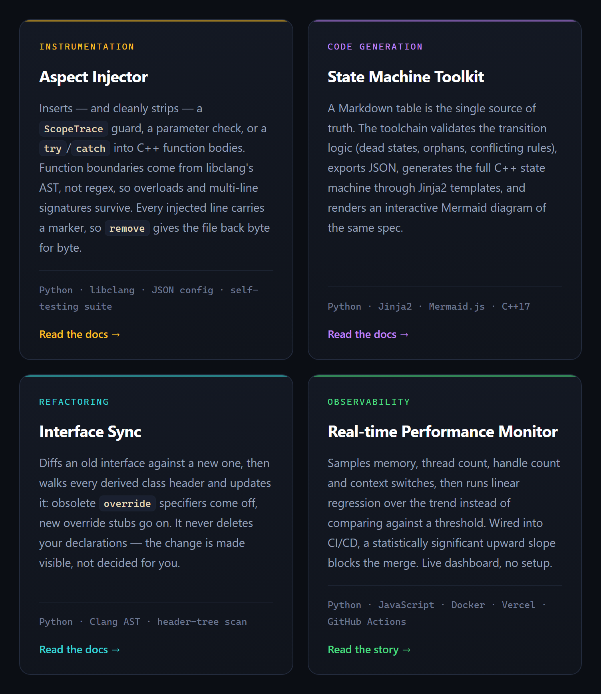
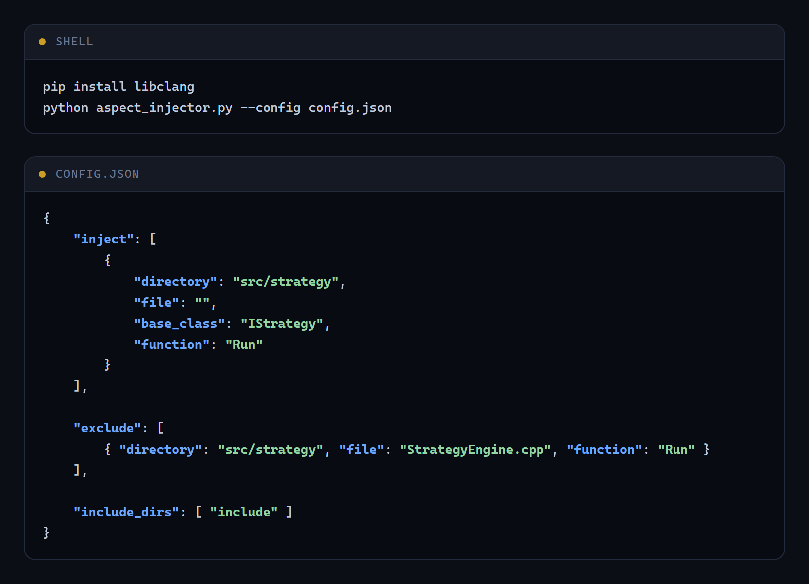
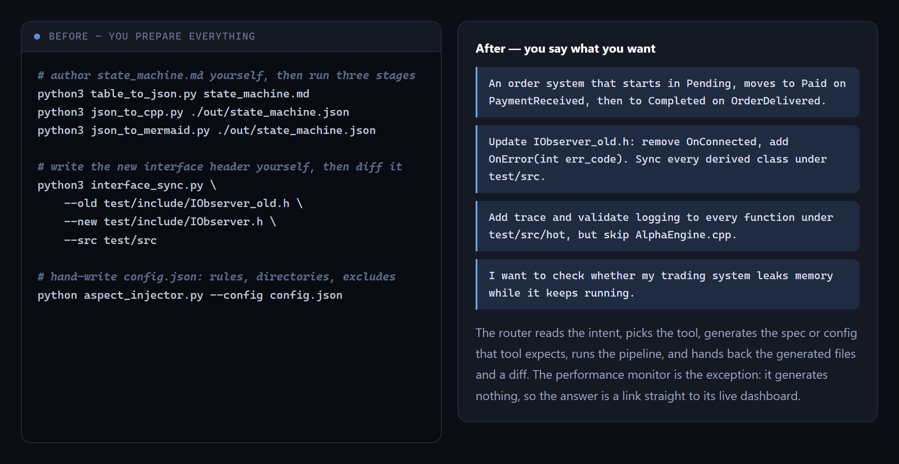
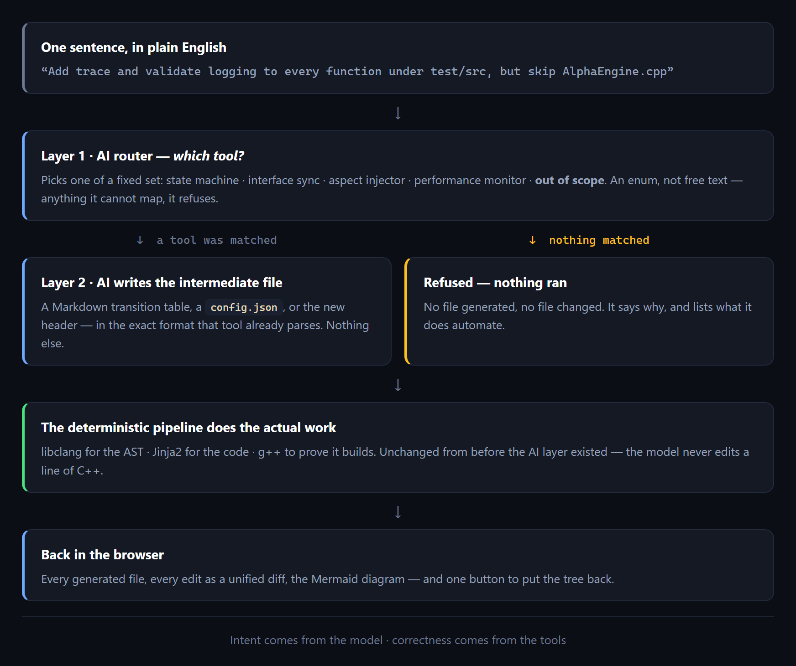
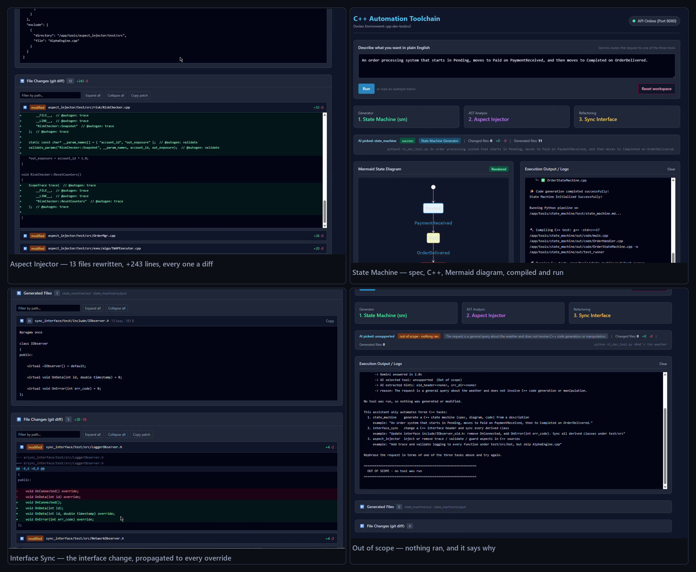

From a Black Terminal Window to a Web Page: Putting AI in Front of My C++ Tools
I've shared three C++ developer tools here before: Aspect Injector (instrumentation inserted straight into function bodies), Interface Sync (every derived class updated when an interface changes), and the State Machine Toolkit (a Markdown table in, a working C++ state machine out). Each one automates a job I was tired of doing by hand.
They all worked. What I didn't expect was the new problem they created: every time I came back to one after a few weeks, I had to re-learn how to drive it. Tools I built to save time weren't saving me much of it. So I put a single AI layer in front of all three — now I describe what I want in one sentence, and the tools do the rest.

Every time I wanted to use Aspect Injector, I had to remember that config.json
takes either inject or remove, never both, and how
exclude is structured. For the State Machine tool, I had to recall the exact
Markdown table format. For Interface Sync, it was three command-line flags —
--old --new --src — and one misplaced space meant starting over.
The more tools I built, the more time I spent remembering how to use them
rather than actually using them.

One day, mid-way through fighting with config.json formatting again, it hit me:
tables, JSON, header files — these are all just structured data. And
translating plain language into structured data is exactly what large language models are good
at. I didn't want AI writing my actual code logic — I don't trust handing that off — but I
could let it translate a sentence into the format each tool expects. The person states intent,
the AI writes the format, the deterministic tool makes the actual change. Clean separation,
nobody overstepping their role.

But a new problem showed up fast: with one entry point serving several tools, how does the AI
know which tool a given sentence is even for? I split it into two AI layers.
The first layer does exactly one job: pick the right tool from a fixed, constrained set of
options — an enum, essentially, with no room for it to freelance, because getting this step
wrong breaks everything downstream. The second layer does the real work: once a tool is
selected, it expands the sentence into that tool's intermediate file — a Markdown table, a
config.json, or a new header. The actual code is still generated by the same
deterministic pipeline as before — libclang and Jinja2.
The model never touches a line of C++ directly.

Once the pipeline worked end to end, another problem surfaced: I was running all of this from a terminal, so I couldn't actually see what the AI had generated or what the diff looked like — I had to go back into the repo and check file by file. Every run felt uncertain, and when something went wrong, I had no easy way to see where. The whole thing was smart under the hood but still felt like a black box on the surface.
So I turned it into a web app. One input box, one sentence in — and on the other side, the generated files, the code diff, even the Mermaid flowchart for the state machine, all rendered right there. Run it, review it, confirm it — all on the same page, no more switching contexts.

The flow now is: one sentence → AI picks the right tool → AI generates the file that tool expects → the original deterministic tool runs it → the diff shows up right there in the browser. The learning curve is gone, and so is the black box.
Demo and full write-up: https://celia2024-bit.github.io/tools/ai/ · source on GitHub